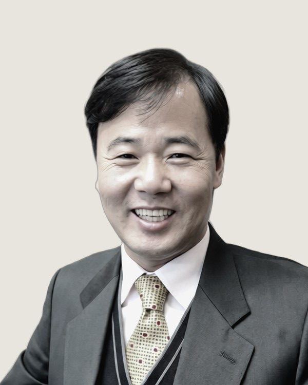
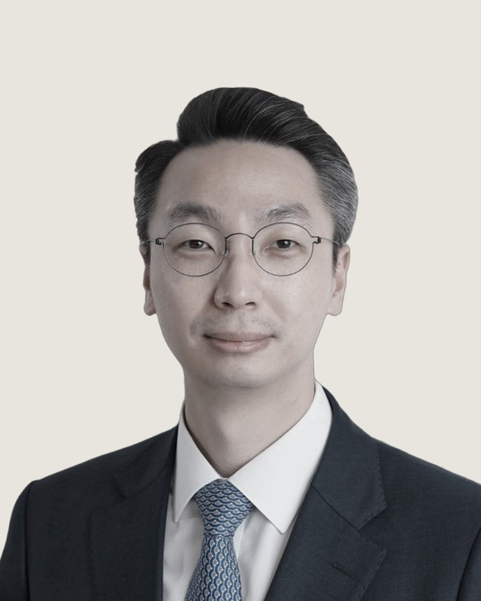
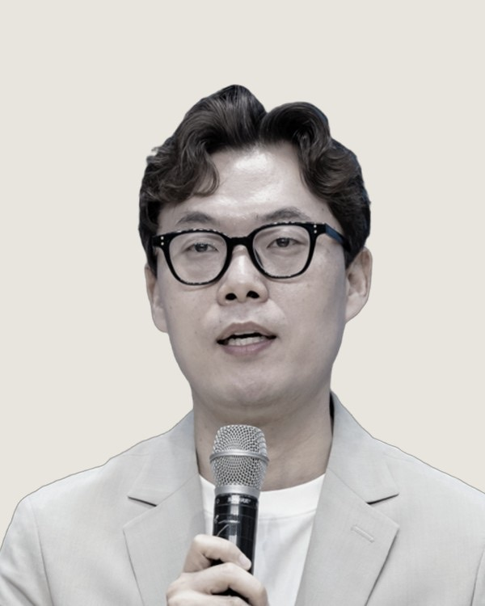
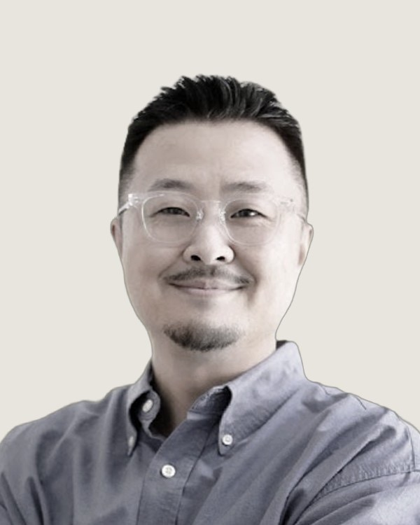
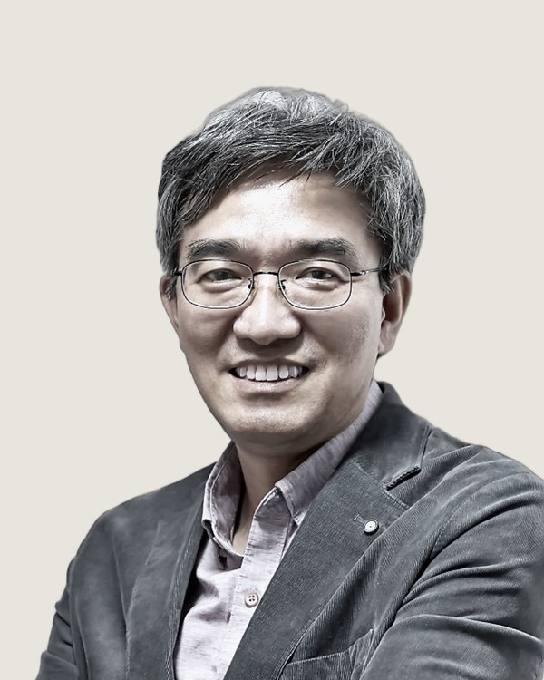
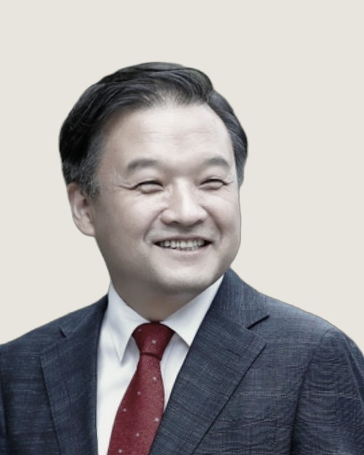
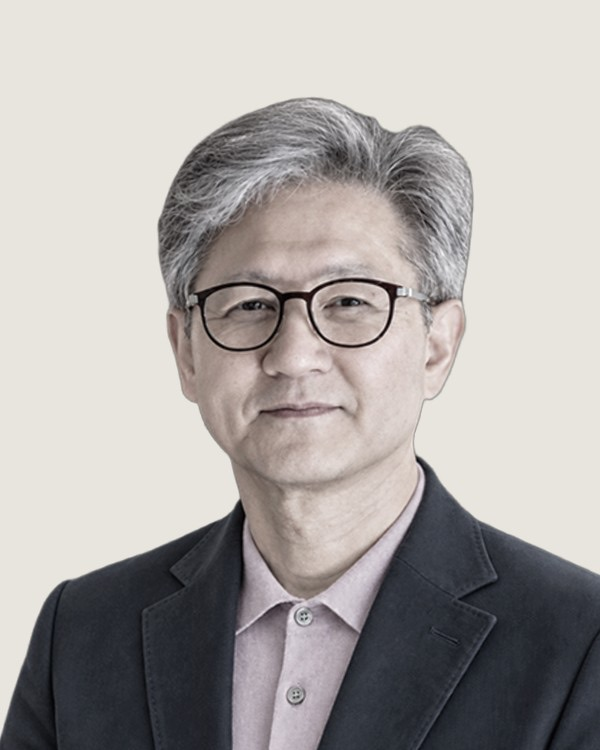
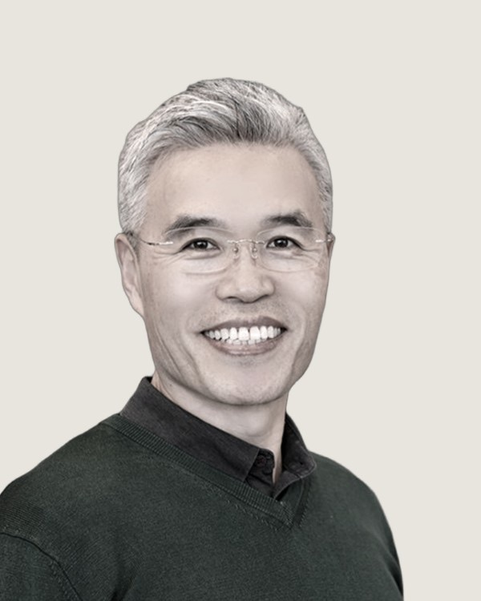

CTS 동역교회 목회자께 드리는 안내
2027년 목회계획을
세우시기 전에
한국교회를 오래 연구하고 현장에서 목회해 온 여덟 분이 내년 목회의 흐름과 방향을 나눕니다.








기획 의도
트렌드를 읽는 데서
멈추지 않도록
해마다 연말이면 이듬해를 전망하는 책이 여러 권 나옵니다. 그러나 그 흐름이 우리 교회에 무엇을 뜻하는지, 무엇을 받아들이고 무엇을 지켜야 할지 정리하기는 쉽지 않습니다.
CTS 미래교회연구소는 사회·경제·교회 분야의 2027년 트렌드 도서 일곱 권을 비교해 일곱 가지 흐름으로 정리했습니다. 그리고 각 흐름을 오래 연구하고 현장에서 실천해 온 분들께 강의를 부탁드렸습니다. 흐름을 소개하는 데 그치지 않고, 신학적으로 살피고 각 교회의 목회 원칙으로 옮기는 데까지 함께 고민합니다.
함께 살핀 책 · 2027 대한민국 트렌드, 트렌드 코리아 2027, 요즘 소비 트렌드 2027, 머니트렌드 2027, 한국교회 트렌드 2027, 다음세대 교회 인사이트 2027, 목회트렌드 2027
강의 구성
일곱 가지 흐름, 여덟 분의 강의
-
여는 강의
트렌드를 넘어, 목회의 본질을 묻다
사회와 성도들의 신앙생활이 달라지는 가운데 교회가 지켜야 할 본질과 새롭게 해야 할 목회는 무엇인지, 신학적·목회적 판단 기준을 나눕니다.
최동규 교수서울신학대학교
교회성장대학원 원장강사 소개
서울신학대학교에서 실천신학을 가르치며 교회성장과 선교적 교회론, 교회 개척을 연구해 왔습니다. 초기 한국교회의 개척 모델부터 오늘의 교회에 필요한 개척 시스템까지 살피며, 교회의 성장과 사명을 하나님 나라의 관점에서 고민해 왔습니다.
- 01
판단의 외주화
AI에 질문과 판단을 맡기는 시대, AI의 답을 어디까지 참고하고 무엇을 기준으로 분별할지 살핍니다.
조성실 교수장로회신학대학교
교회와디지털미디어 센터장강사 소개
신학과 영상학을 공부하고 소망교회에서 목회한 경험을 바탕으로 기독교윤리의 관점에서 인공지능을 연구해 왔습니다. 온라인 사역과 하이브리드 교회, AI가 교회와 신앙에 미치는 영향을 살피며 기술을 어떻게 분별하고 활용할지 고민해 왔습니다.
- 02
신앙의 언번들링
성도들이 설교와 예배, 신앙 훈련을 각자의 필요에 따라 골라 듣는 흐름을 살피고, 그 선택이 건강한 성장과 공동체로 이어지도록 돕는 길을 찾습니다.
이현철 교수고신대학교 기독교교육과
『한국교회 트렌드 2027』 저자강사 소개
기독교교육과 실천신학을 바탕으로 교회교육, 청소년 신앙, 교리교육, 세대별 신앙생활과 개척교회 등 한국교회의 여러 현장을 연구해 왔습니다. 설문과 인터뷰, 현장 분석으로 변화의 배경을 살피고 목회와 교육의 방향을 모색해 왔습니다.
- 03
진정성의 프리미엄
신앙이 일상의 고백과 실천으로 이어지도록 청년들을 길러 온 경험과, 진정성 있는 공동체를 세워 가는 목회의 고민을 나눕니다.
남빈 목사뉴송처치 담임목사
2026 G2A 준비위원회 디렉터강사 소개
청년들이 있는 모습 그대로 교회에 와서 예수님을 알아 가고 함께 제자로 자라는 공동체를 뉴송처치에서 만들어 가고 있습니다. 셀 모임과 제자훈련으로 청년들이 말씀을 배우고, 한 주를 어떻게 믿음으로 살았는지 나누며 서로 격려하도록 이끌고 있습니다.
- 04
비평균의 목양
성도들의 삶과 신앙이 한 가지 모습으로 설명되지 않는 시대, 서로 다른 형편과 필요를 지닌 성도들에게 맞는 목회를 어떻게 세울지 다룹니다.
지용근 대표목회데이터연구소 대표
『한국교회 트렌드 2027』 대표 저자강사 소개
한국갤럽 연구본부장과 글로벌리서치 대표이사를 거쳐 목회데이터연구소를 세웠습니다. 코로나19 이후 교회의 변화와 사회적 신뢰도, 한국인의 종교의식과 신앙생활을 조사해 왔고, 그 결과를 『한국교회 트렌드』 시리즈로 나눠 왔습니다.
- 05
관계 인프라의 재건
관계가 약해지고 돌봄의 필요가 커지는 시대, 교회가 서로의 삶을 살피고 돌보는 공동체가 되는 길을 나눕니다.
박영호 목사포항제일교회 담임목사
미래목회와말씀연구원 원장강사 소개
신약학 연구와 교회 개척, 전통교회 목회를 두루 경험한 성서학자이자 목회자입니다. 포항제일교회에서 지역 중심의 교구를 연령별 공동체로 개편하고 성도 간 교제와 지역사회 돌봄을 강화해 왔습니다. 예장통합 목회자 모임 ‘아드폰테스’ 회장으로 목회자 간 교제와 연구 활동을 이끌고 있습니다.
- 06
리더십 포트폴리오 전환
한 사람에게 집중된 리더십을 넘어, 목회자와 부교역자, 성도가 각자의 은사와 역할을 살려 함께 사역을 이끄는 방법을 나눕니다.
류지성 교수한국기술교육대학교
전 삼성글로벌리서치 교육혁신센터장강사 소개
고려대학교에서 조직행동으로 박사학위를 받고 삼성글로벌리서치에서 20여 년간 인사·조직과 리더십을 연구했습니다. 삼성서울병원 HR혁신팀장과 고려대학교 경영대학 특임교수를 지냈고, 기독경영연구원 이사로 건강한 교회와 기독경영에 관심을 이어 왔습니다.
- 07
목회철학의 시스템화
목회 현장의 고민과 선택으로 형성된 목회철학이 공동체의 관계와 사역에 어떻게 반영되었는지, 본질을 지키며 공동체를 세워 온 경험을 나눕니다.
황성수 목사한사랑교회 담임목사
IBA 공동대표강사 소개
한사랑교회를 담임하며 교회와 지역사회를 잇는 목회를 이어 왔습니다. 선교하는 교회를 위해 비즈니스 선교(Business as Mission)를 연구하고, 시대의 변화와 사람들의 삶을 이해하며 복음을 전할 길을 고민해 왔습니다.
진행 방식
하루 저녁의 컨퍼런스,
8주의 아카데미
온라인 컨퍼런스
| 18:00 | 여는 말 | |
| 18:05 | 2027 트렌드, 일곱 개의 큰 흐름으로 읽다 | 오현택 국장 |
| 18:30 | 트렌드를 넘어, 교회의 본질을 붙들다 | 최동규 교수 |
| 19:05 | 판단의 외주화 | 조성실 교수 |
| 19:35 | 신앙의 언번들링 | 이현철 교수 |
| 20:05 | 진정성의 프리미엄 | 남빈 목사 |
| 20:35 | 비평균의 목양 | 지용근 대표 |
| 21:05 | 관계 인프라의 재건 | 박영호 목사 |
| 21:35 | 리더십 포트폴리오 전환 | 류지성 교수 |
| 22:05 | 목회철학의 시스템화 | 황성수 목사 |
| 22:35 | 마무리 |
오현택 국장은 CTS 미래교회연구소에서 이번 과정을 기획했습니다.
KCMC 목회 리더십 아카데미
| 1주 | 교회의 본질과 목회 리더십의 기준 | 최동규 |
| 2주 | AI 시대의 목회적 분별과 의사결정 | 조성실 |
| 3주 | 분화하는 신앙과 교회의 연결 전략 | 이현철 |
| 4주 | 교회 공동체를 세우는 진정성의 힘 | 남빈 |
| 5주 | 다양성을 고려하는 목양의 설계 | 지용근 |
| 6주 | 관계 기반 공동체의 회복과 재구성 | 박영호 |
| 7주 | 참여와 협업을 이끄는 교회 리더십 | 류지성 |
| 8주 | 목회철학의 조직적 구현과 사역 운영 | 황성수 |
주마다 두 강씩 열립니다. 기간 제한 없이 다시 볼 수 있고, 2027년 1월 31일까지 모두 들으시면 수료증을 드립니다.
함께 드리는 것
아카데미를 들으시는
분께
- BEYOND TRENDS 2027 핸드북일곱 흐름의 분석과 목회적 해석, 교회 적용 방향과 현장 사례를 담은 전자책입니다. 1월 중 보내 드립니다.
- CTS 목회 리더십 아카데미 수료증2027년 1월 31일까지 전 강의를 들으신 분께 2월 초에 보내 드립니다.
- 7대 메타트렌드 해설 특강일곱 흐름을 어떤 자료와 분석으로 도출했는지, 각 흐름이 목회에 던지는 질문까지 풀어 드립니다.
- 「함께 움직이는 교회, 어떻게 일하는가」 강의유료로 열렸던 KCMC Lite 워크숍 강의를 아카데미 수강자께 공개합니다.
아카데미 수강료는 CTS 방송선교와 탄자니아 UAUT 교육선교를 위해 사용됩니다.
참가비와 신청
CTS 동역교회는
50,000원입니다
| 온라인 컨퍼런스 | 15,000원 |
| KCMC 목회 리더십 아카데미 (8주 16강) | 70,000원 |
| BEYOND TRENDS 2027 핸드북 | 15,000원 상당 |
| 세 가지를 함께 신청하실 때 정상가 | 75,000원 |
| CTS 동역교회 참가비 | 50,000원 |
CTS 지사를 통해 이 안내를 받으신 교회께 드리는 참가비입니다.
신청하기문의 · 가까운 CTS 지사 또는 대한민국 목회 컨퍼런스 02-6333-0088
자주 묻는 질문
미리 알려 드립니다
11월 19일 저녁에 참여하기 어렵습니다
컨퍼런스는 녹화 영상이 제공됩니다. 편하신 시간에 보실 수 있습니다.
아카데미 강의는 언제까지 볼 수 있나요
기간 제한 없이 다시 보실 수 있습니다. 수료증은 2027년 1월 31일까지 전 강의를 들으신 분께 드립니다.
핸드북은 언제 받나요
전자책으로 1월 중 보내 드릴 예정입니다.
신청은 어디에서 하나요
이 페이지의 신청하기 버튼을 누르시면 대한민국 목회 컨퍼런스(KCMC) 홈페이지의 신청 화면으로 이동합니다. 결제와 강의 수강은 KCMC 홈페이지에서 이루어집니다.